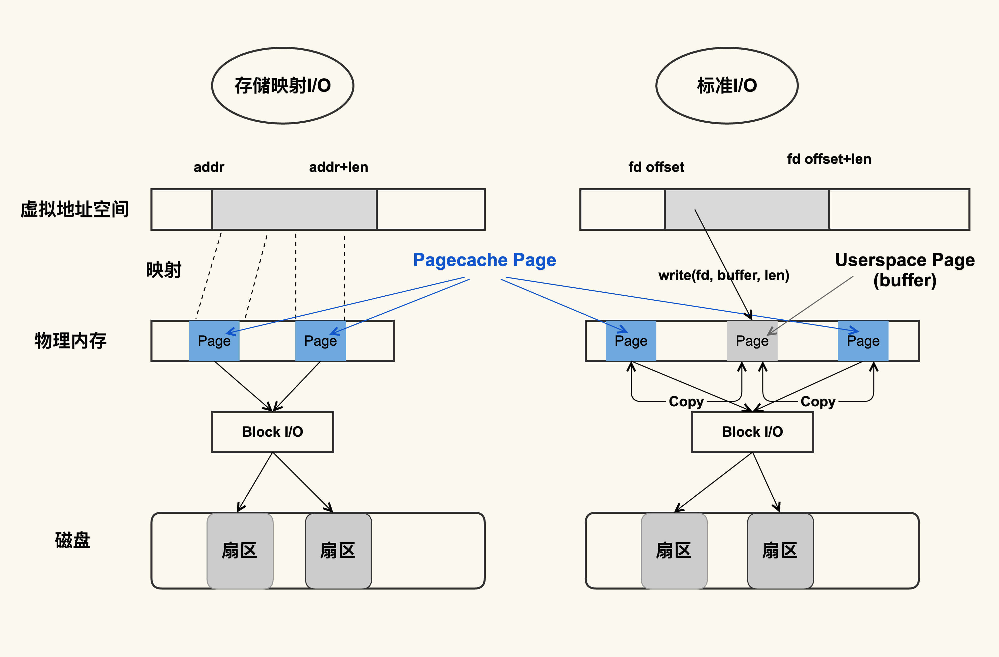
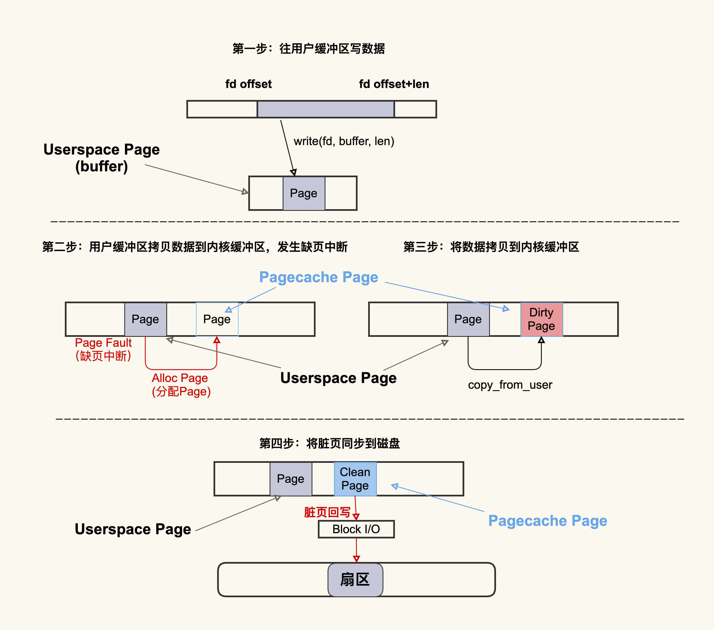
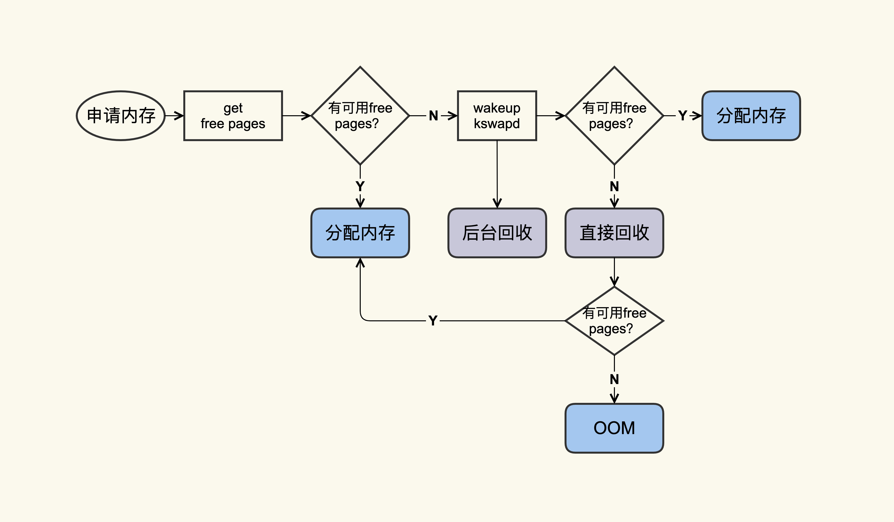
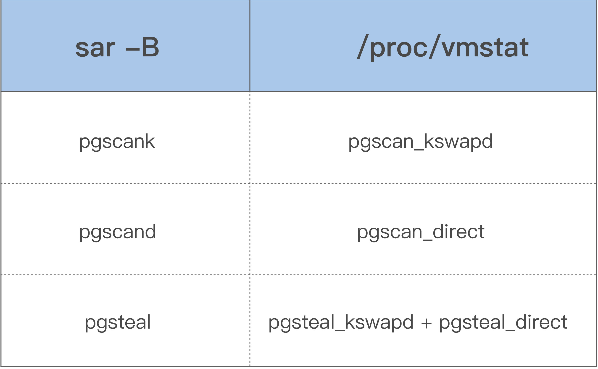

- 00 开篇词 如何让Linux内核更好地服务应用程序？.md.html
- 01 基础篇 如何用数据观测Page Cache？.md.html
- 02 基础篇 Page Cache是怎样产生和释放的？.md.html
- 03 案例篇 如何处理Page Cache难以回收产生的load飙高问题？.md.html
- 04 案例篇 如何处理Page Cache容易回收引起的业务性能问题？.md.html
- 05 分析篇 如何判断问题是否由Page Cache产生的？.md.html
- 06 基础篇 进程的哪些内存类型容易引起内存泄漏？.md.html
- 07 案例篇 如何预防内存泄漏导致的系统假死？.md.html
- 08 案例篇 Shmem：进程没有消耗内存，内存哪去了？.md.html
- 09 分析篇 如何对内核内存泄漏做些基础的分析？.md.html
- 10 分析篇 内存泄漏时，我们该如何一步步找到根因？.md.html
- 11 基础篇 TCP连接的建立和断开受哪些系统配置影响？.md.html
- 12 基础篇 TCP收发包过程会受哪些配置项影响？.md.html
- 13 案例篇 TCP拥塞控制是如何导致业务性能抖动的？.md.html
- 14 案例篇 TCP端到端时延变大，怎样判断是哪里出现了问题？.md.html
- 15 分析篇 如何高效地分析TCP重传问题？.md.html
- 16 套路篇 如何分析常见的TCP问题？.md.html
- 17 基础篇 CPU是如何执行任务的？.md.html
- 18 案例篇 业务是否需要使用透明大页：水可载舟，亦可覆舟？.md.html
- 19 案例篇 网络吞吐高的业务是否需要开启网卡特性呢？.md.html
- 20 分析篇 如何分析CPU利用率飙高问题 ？.md.html
- 加餐 我是如何使用tracepoint来分析内核Bug的？.md.html
- 结束语 第一次看内核代码，我也很懵逼.md.html
- 捐赠
02 基础篇 Page Cache是怎样产生和释放的？
你好，我是邵亚方。
上一讲，我们主要讲了“什么是Page Cache”（What），“为什么需要Page Cache”（Why），我们这堂课还需要继续了解一下“How”：也就是Page Cache是如何产生和释放的。
在我看来，对Page Cache的“What-Why-How”都有所了解之后，你才会对它引发的问题，比如说Page Cache引起的load飙高问题或者应用程序的RT抖动问题更加了然于胸，从而防范于未然。
其实，Page Cache是如何产生和释放的，通俗一点的说就是它的“生”（分配）与“死”（释放），即Page Cache的生命周期，那么接下来，我们就先来看一下它是如何“诞生”的。
Page Cache是如何“诞生”的？
Page Cache的产生有两种不同的方式：
- Buffered I/O（标准I/O）；
- Memory-Mapped I/O（存储映射I/O）。
这两种方式分别都是如何产生Page Cache的呢？来看下面这张图：

从图中你可以看到，虽然二者都能产生Page Cache，但是二者的还是有些差异的：
标准I/O是写的(write(2))用户缓冲区(Userpace Page对应的内存)，然后再将用户缓冲区里的数据拷贝到内核缓冲区(Pagecache Page对应的内存)；如果是读的(read(2))话则是先从内核缓冲区拷贝到用户缓冲区，再从用户缓冲区读数据，也就是buffer和文件内容不存在任何映射关系。
对于存储映射I/O而言，则是直接将Pagecache Page给映射到用户地址空间，用户直接读写Pagecache Page中内容。
显然，存储映射I/O要比标准I/O效率高一些，毕竟少了“用户空间到内核空间互相拷贝”的过程。这也是很多应用开发者发现，为什么使用内存映射I/O比标准I/O方式性能要好一些的主要原因。
我们来用具体的例子演示一下Page Cache是如何“诞生”的，就以其中的标准I/O为例，因为这是我们最常使用的一种方式，如下是一个简单的示例脚本：
#!/bin/sh
#这是我们用来解析的文件
MEM_FILE="/proc/meminfo"
#这是在该脚本中将要生成的一个新文件
NEW_FILE="/home/yafang/dd.write.out"
#我们用来解析的Page Cache的具体项
active=0
inactive=0
pagecache=0
IFS=' '
#从/proc/meminfo中读取File Page Cache的大小
function get_filecache_size()
{
items=0
while read line
do
if [[ "$line" =~ "Active:" ]]; then
read -ra ADDR <<<"$line"
active=${ADDR[1]}
let "items=$items+1"
elif [[ "$line" =~ "Inactive:" ]]; then
read -ra ADDR <<<"$line"
inactive=${ADDR[1]}
let "items=$items+1"
fi
if [ $items -eq 2 ]; then
break;
fi
done < $MEM_FILE
}
#读取File Page Cache的初始大小
get_filecache_size
let filecache="$active + $inactive"
#写一个新文件，该文件的大小为1048576 KB
dd if=/dev/zero of=$NEW_FILE bs=1024 count=1048576 &> /dev/null
#文件写完后，再次读取File Page Cache的大小
get_filecache_size
#两次的差异可以近似为该新文件内容对应的File Page Cache
#之所以用近似是因为在运行的过程中也可能会有其他Page Cache产生
let size_increased="$active + $inactive - $filecache"
#输出结果
echo "File size 1048576KB, File Cache increased" $size_inc
在这里我提醒你一下，在运行该脚本前你要确保系统中有足够多的free内存（避免内存紧张产生回收行为），最终的测试结果是这样的：
File size 1048576KB, File Cache increased 1048648KB
通过这个脚本你可以看到，在创建一个文件的过程中，代码中/proc/meminfo里的Active(file)和Inactive(file)这两项会随着文件内容的增加而增加，它们增加的大小跟文件大小是一致的（这里之所以略有不同，是因为系统中还有其他程序在运行）。另外，如果你观察得很仔细的话，你会发现增加的Page Cache是Inactive(File)这一项，你可以去思考一下为什么会这样？这里就作为咱们这节课的思考题。
当然，这个过程看似简单，但是它涉及的内核机制还是很多的，换句话说，可能引起问题的地方还是很多的，我们用一张图简单描述下这个过程：

这个过程大致可以描述为：首先往用户缓冲区buffer(这是Userspace Page)写入数据，然后buffer中的数据拷贝到内核缓冲区（这是Pagecache Page），如果内核缓冲区中还没有这个Page，就会发生Page Fault会去分配一个Page，拷贝结束后该Pagecache Page是一个Dirty Page（脏页），然后该Dirty Page中的内容会同步到磁盘，同步到磁盘后，该Pagecache Page变为Clean Page并且继续存在系统中。
我建议你可以将Alloc Page理解为Page Cache的“诞生”，将Dirty Page理解为Page Cache的婴幼儿时期（最容易生病的时期），将Clean Page理解为Page Cache的成年时期（在这个时期就很少会生病了）。
但是请注意，并不是所有人都有童年的，比如孙悟空，一出生就是成人了，Page Cache也一样，如果是读文件产生的Page Cache，它的内容跟磁盘内容是一致的，所以它一开始是Clean Page，除非改写了里面的内容才会变成Dirty Page（返老还童）。
就像我们为了让婴幼儿健康成长，要悉心照料他/她一样，为了提前发现或者预防婴幼儿时期的Page Cache发病，我们也需要一些手段来观测它：
$ cat /proc/vmstat | egrep "dirty|writeback"
nr_dirty 40
nr_writeback 2
如上所示，nr_dirty表示当前系统中积压了多少脏页，nr_writeback则表示有多少脏页正在回写到磁盘中，他们两个的单位都是Page(4KB)。
通常情况下，小朋友们（Dirty Pages）聚集在一起（脏页积压）不会有什么问题，但在非常时期比如流感期间，就很容易导致聚集的小朋友越多病症就会越严重。与此类似，Dirty Pages如果积压得过多，在某些情况下也会容易引发问题，至于是哪些情况，又会出现哪些问题，我们会在案例篇中具体讲解。
明白了Page Cache的“诞生”后，我们再来看一下Page Cache的“死亡”：它是如何被释放的？
Page Cache是如何“死亡”的？
你可以把Page Cache的回收行为(Page Reclaim)理解为Page Cache的“自然死亡”。
言归正传，我们知道，服务器运行久了后，系统中free的内存会越来越少，用free命令来查看，大部分都会是used内存或者buff/cache内存，比如说下面这台生产环境中服务器的内存使用情况：
$ free -g
total used free shared buff/cache available
Mem: 125 41 6 0 79 82
Swap: 0 0 0
free命令中的buff/cache中的这些就是“活着”的Page Cache，那它们什么时候会“死亡”（被回收）呢？我们来看一张图：

你可以看到，应用在申请内存的时候，即使没有free内存，只要还有足够可回收的Page Cache，就可以通过回收Page Cache的方式来申请到内存，回收的方式主要是两种：直接回收和后台回收。
那它是具体怎么回收的呢？你要怎么观察呢？其实在我看来，观察Page Cache直接回收和后台回收最简单方便的方式是使用sar：
$ sar -B 1
02:14:01 PM pgpgin/s pgpgout/s fault/s majflt/s pgfree/s pgscank/s pgscand/s pgsteal/s %vmeff
02:14:01 PM 0.14 841.53 106745.40 0.00 41936.13 0.00 0.00 0.00 0.00
02:15:01 PM 5.84 840.97 86713.56 0.00 43612.15 717.81 0.00 717.66 99.98
02:16:01 PM 95.02 816.53 100707.84 0.13 46525.81 3557.90 0.00 3556.14 99.95
02:17:01 PM 10.56 901.38 122726.31 0.27 54936.13 8791.40 0.00 8790.17 99.99
02:18:01 PM 108.14 306.69 96519.75 1.15 67410.50 14315.98 31.48 14319.38 99.80
02:19:01 PM 5.97 489.67 88026.03 0.18 48526.07 1061.53 0.00 1061.42 99.99
借助上面这些指标，你可以更加明确地观察内存回收行为，下面是这些指标的具体含义：
- pgscank/s : kswapd(后台回收线程)每秒扫描的page个数。
- pgscand/s: Application在内存申请过程中每秒直接扫描的page个数。
- pgsteal/s: 扫描的page中每秒被回收的个数。
- %vmeff: pgsteal/(pgscank+pgscand), 回收效率，越接近100说明系统越安全，越接近0说明系统内存压力越大。
这几个指标也是通过解析/proc/vmstat里面的数据来得出的，对应关系如下：

关于这几个指标我说一个小插曲，要知道，如果Linux Kernel本身设计不当会给你带来困扰。所以，如果你观察到应用程序的结果跟你的预期并不一致，也有可能是因为内核设计上存在问题，你可以对内核持适当的怀疑态度哦，下面这个是我最近遇到的一个案例。
如果你对Linus有所了解的话，应该会知道Linus对Linux Kernel设计的第一原则是“never break the user space”。很多内核开发者在设计内核特性的时候，会忽略掉新特性对应用程序的影响，比如在前段时间就有人(Google的一个内核开发者)提交了一个patch来修改内存回收这些指标的含义，但是最终被我和另外一个人(Facebook的一个内核开发者)把他的这个改动给否决掉了。具体的细节并不是咱们这节课的重点，我就不多说了，我建议你在课下看这个讨论：[PATCH] mm: vmscan: consistent update to pgsteal and pgscan，可以看一下内核开发者们在设计内核特性时是如何思考的，这会有利于你更加全面的去了解整个系统，从而让你的应用程序更好地融入到系统中。
课堂总结
以上就是本节课的全部内容了，本节课，我们主要讲了Page Cache是如何“诞生”的，以及如何“死亡”的，我要强调这样几个重点：
- Page Cache是在应用程序读写文件的过程中产生的，所以在读写文件之前你需要留意是否还有足够的内存来分配Page Cache；
- Page Cache中的脏页很容易引起问题，你要重点注意这一块；
- 在系统可用内存不足的时候就会回收Page Cache来释放出来内存，我建议你可以通过sar或者/proc/vmstat来观察这个行为从而更好的判断问题是否跟回收有关
总的来说，Page Cache的生命周期对于应用程序而言是相对比较透明的，即它的分配与回收都是由操作系统来进行管理的。正是因为这种“透明”的特征，所以应用程序才会难以控制Page Cache，Page Cache才会容易引发那么多问题。在接下来的案例篇里，我们就来看看究竟会引发什么样子的问题，以及你正确的分析思路是什么样子的。
课后作业
因为每个人的关注点都不一样，对问题的理解也不一样。假如你是一个应用开发者，你会更加关注应用的性能和稳定性；假如你是一个运维人员，你会更加关注系统的稳定性；假如你是初学内核的开发者，你会想要关注内核的实现机制。
所以我留了不同的作业题，主题是围绕“Inactive与Active Page Cache的关系”当然了，对应的难度也不同：
如果你是一名应用开发者，那么我想问问你为什么第一次读写某个文件，Page Cache是Inactive的？如何让它变成Active的呢？在什么情况下Active的又会变成Inactive的呢？明白了这个问题，你会对应用性能调优有更加深入的理解。
如果你是一名运维人员，那么建议你思考一下，系统中有哪些控制项可以影响Inactive与Active Page Cache的大小或者二者的比例？
如果你是一名初学内核的开发者，那么我想问你，对于匿名页而言，当产生一个匿名页后它会首先放在Active链表上；而对于文件页而言，当产生一个文件页后它会首先放在Inactive链表上。请问为什么会这样子？这是合理的吗？欢迎在留言区分享你的看法。
感谢你的阅读，如果你认为这节课的内容有收获，也欢迎把它分享给你的朋友，我们下一讲见。
© 2019 - 2023 Liangliang Lee. Powered by gin and hexo-theme-book.